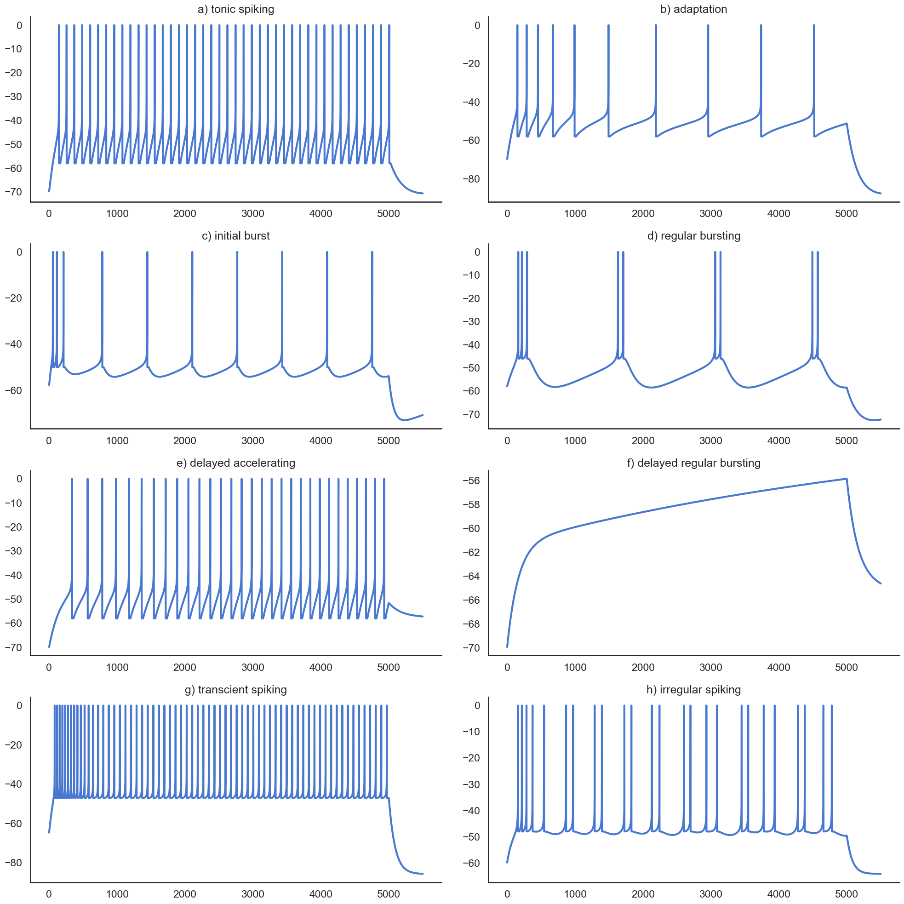

!pip install ANNarchyAdaptive Exponential IF neuron
Download the Jupyter notebook: AdEx.ipynb
Run it directly on colab: AdEx.ipynb
This notebook explores how the AdEx neuron model can reproduce various spiking patterns observed in vivo.
Code based on:
Naud, R., Marcille, N., Clopath, C., and Gerstner, W. (2008). Firing patterns in the adaptive exponential integrate-and-fire model. Biol Cybern 99, 335. doi:10.1007/s00422-008-0264-7.
On colab:
from ANNarchy import *
clear()
setup(dt=0.1)ANNarchy 4.7 (4.7.1.5) on darwin (posix).The AdEx neuron is defined by the following equations:
C \, \frac{dv}{dt} = -g_L \ (v - E_L) + g_L \, \Delta_T \, \exp(\frac{v - v_T}{\Delta_T}) + I - w
\tau_w \, \frac{dw}{dt} = a \, (v - E_L) - w
if v > v_\text{spike}:
- v = v_R
- w = w + b
AdEx = Neuron(
parameters="""
C = 200.
gL = 10. # not g_L! g_ is reserved for spike transmission
E_L = -70.
v_T = -50.
delta_T = 2.0
a = 2.0
tau_w = 30.
b = 0.
v_r = -58.
I = 500.
v_spike = 0.0
""",
equations="""
C * dv/dt = - gL * (v - E_L) + gL * delta_T * exp((v-v_T)/delta_T) + I - w : init=-70.0
tau_w * dw/dt = a * (v - E_L) - w : init=0.0
""",
spike="""
v >= v_spike
""",
reset="""
v = v_r
w += b
""",
refractory = 2.0
)We create a population of 8 AdEx neurons which will get different parameter values.
pop = Population(8, AdEx)compile()We add a monitor to track the membrane potential and the spike timings during the simulation.
m = Monitor(pop, ['v', 'spike'])As in the paper, we provide different parameters to each neuron and simulate the network for 500 ms with a fixed input current, and remove that current for an additional 50 ms.
# a) tonic spiking b) adaptation, c) initial burst, d) regular bursting, e) delayed accelerating, f) delayed regular bursting, g) transcient spiking, h) irregular spiking
pop.C = [200, 200, 130, 200, 200, 200, 100, 100]
pop.gL = [ 10, 12, 18, 10, 12, 12, 10, 12]
pop.E_L = [-70, -70, -58, -58, -70, -70, -65, -60]
pop.v_T = [-50, -50, -50, -50, -50, -50, -50, -50]
pop.delta_T = [ 2, 2, 2, 2, 2, 2, 2, 2]
pop.a = [ 2, 2, 4, 2,-10., -6.,-10.,-11.]
pop.tau_w = [ 30, 300, 150, 120, 300, 300, 90, 130]
pop.b = [ 0, 60, 120, 100, 0, 0, 30, 30]
pop.v_r = [-58, -58, -50, -46, -58, -58, -47, -48]
pop.I = [500, 500, 400, 210, 300, 110, 350, 160]
# Reset neuron
pop.v = pop.E_L
pop.w = 0.0
# Simulate
simulate(500.)
pop.I = 0.0
simulate(50.)
# Recordings
data = m.get('v')
spikes = m.get('spike')
for n, t in spikes.items(): # Normalize the spikes
data[[x - m.times()['v']['start'][0] for x in t], n] = 0.0We can now visualize the simulations:
import matplotlib.pyplot as plt
import seaborn as sns
sns.set(style="white", palette="muted", color_codes=True)
sns.set_context("talk")
titles = [
"a) tonic spiking",
"b) adaptation",
"c) initial burst",
"d) regular bursting",
"e) delayed accelerating",
"f) delayed regular bursting",
"g) transcient spiking",
"h) irregular spiking"
]
plt.figure(figsize=(20, 20))
plt.ylim((-70., 0.))
for i in range(8):
plt.subplot(4, 2, i+1)
plt.title(titles[i])
plt.plot(data[:, i], lw=3)
sns.despine()
plt.tight_layout()
plt.show()/var/folders/6w/6msx49ws7k13cc0bbys0tt4m0000gn/T/ipykernel_72075/1457585605.py:21: MatplotlibDeprecationWarning: Auto-removal of overlapping axes is deprecated since 3.6 and will be removed two minor releases later; explicitly call ax.remove() as needed.
plt.subplot(4, 2, i+1)